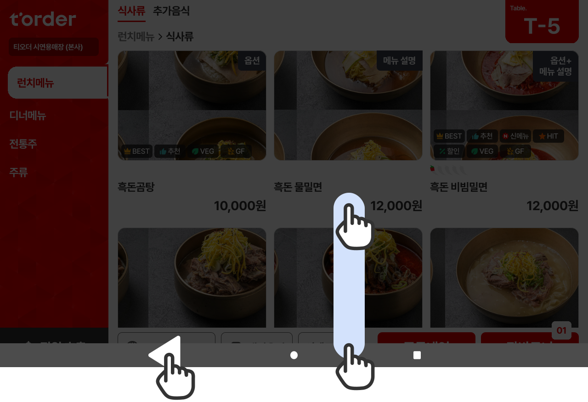
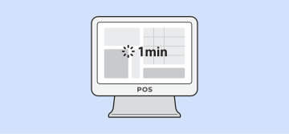
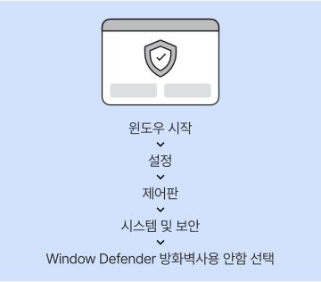
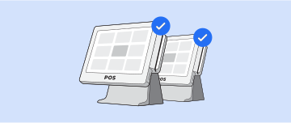

유의 사항
티오더 프로그램 실행
티오더로 주문한 건이 연동되지 않을 경우, 티오더 프로그램을 재실행해 주세요.
‘포스 주문 창’ 1분 이상 유지 금지
티오더 사용 중에는 포스 화면을 테이블 선택 창으로 유지해 주셔야 원활한 주문 접수가 가능합니다.
포스 방화벽 실행 금지
포스 방화벽은 항상 해제 상태를 유지해 주세요.
모든 포스, 프로그램 실행 및 개점 처리 필요
매장에 설치된 모든 포스 프로그램을 실행하고 개점 처리가 되어야 포스외 태블릿의 주문이 원활하게 연동됩니다.
포스 최소/권장 사양 준수
포스의 C드라이브의 잔여 용량을 1GB 이상으로 관리해 주시고 부족할 경우 포스사 측으로 용량 정리를 요청해 주세요.
상품 생성 시 출력 설정 필요
신규 상품 생성 및 주문서 출력은 설정은 포스사를 통해 요청해 주세요.